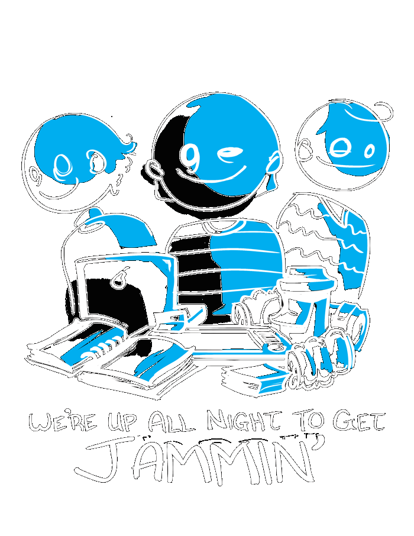

Requirements
- Finished by Jan 16, 2022
- PNG with transparency: 300 dpi for Tabloid paper size 11" x 17" or 279x431mm or .AI/.eps file with fonts converted to outlines
- Have "Global Game Jam Vancouver" somewhere prominent
- "2022" somewhere, it can be large or small
- Video game art or game making related art
- Colours should be as few as possible, 3-5 different colours for a t-shirt design (try to use fewer if possible!)
- A poster version with as many colours as you want.
- Design should look good on a dark gray t-shirt or a different colour that is available from the t-shirt printing company we are using
- Vibe of art is similar to past shirts (subjective)
- Can optionally use GGJ Vancouver logo
- Optionally include references to programming, art, music, writing, and project management
Optional Font you can use
Download Bebas Font
Note: you don't have to use our logos
Main Logo

Main Logo no text

Main Logo square

Global site logo

Shirt 2020

Shirt 2019

Shirt 2018

Shirt 2017
Shirt 2016
Shirt 2015
Shirt 2014

Shirt 2013

Shirt 2012
Shirt 2011
Shirt 2010